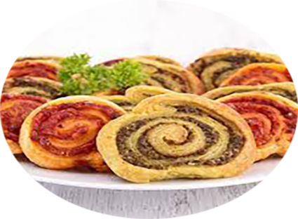

Biscuits croustillants au pesto

Préparation : 10 mn
Cuisson 15 mn
Ingrédients
- 1 Pâte feuilletée
- 1 pot de Pesto
- 1 pot de Pesto rosso
Recette
- Découpez la pâte feuilletée en deux puis étalez en cercle chaque moitié à l'aide d'un rouleau à pâtisserie, sur un plan de travail fariné.
- Étalez sur le dessus d'un des cercles le pesto vert, sur le dessus de l'autre cercle le pesto rouge.
- Roulez les cercles de pâte en boudins très serrés.
- Couvrez-les de film alimentaire et placez-les au frais pendant 30 minutes.
- Préchauffez le four à 180°C.
- Chemisez une plaque de four avec du papier sulfurisé.
- Retirez le film alimentaire et coupez chaque boudin de pâte en tronçons d'1 cm de largeur.
- Placez les tronçons de pâte sur la plaque de four.
- Enfournez pendant 15 minutes jusqu’à ce que vos biscuits croustillants au pesto soient bien dorés.
- Laissez refroidir à l’air libre à la sortie du four.
- Si vous avez besoin de conserver les biscuits en attendant le jour J, placez-les dans une boîte hermétique jusqu'à la dégustation.
|